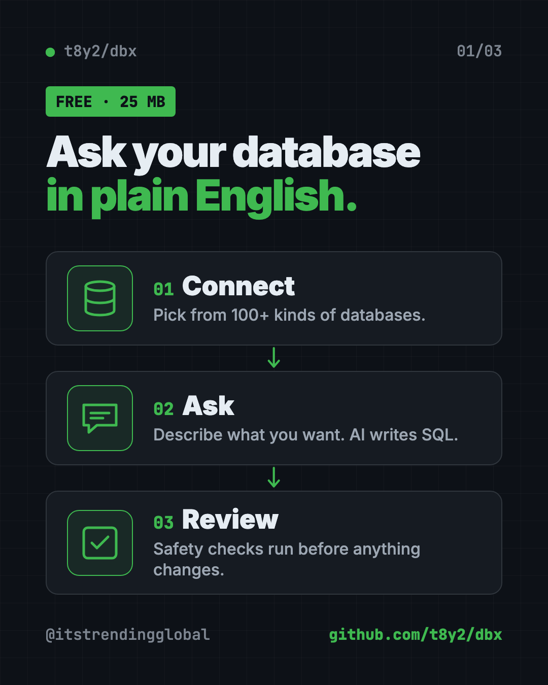
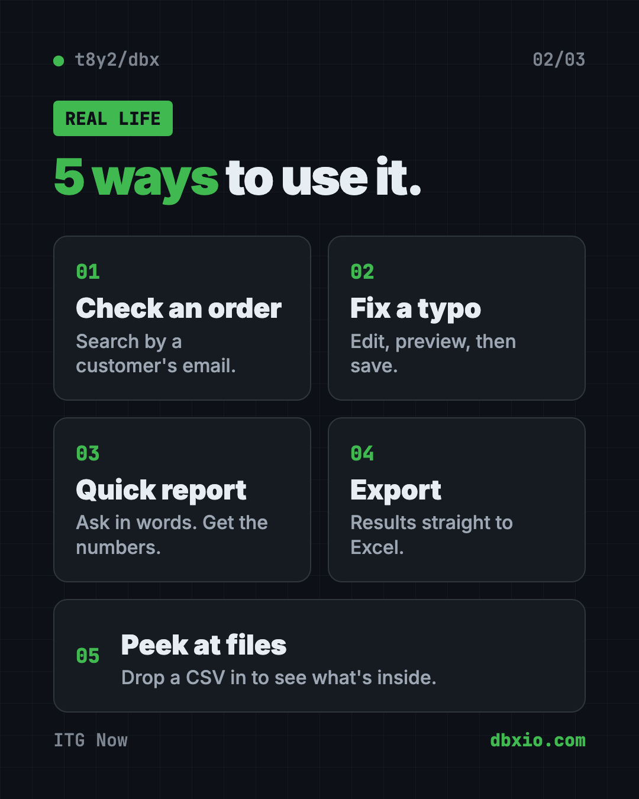
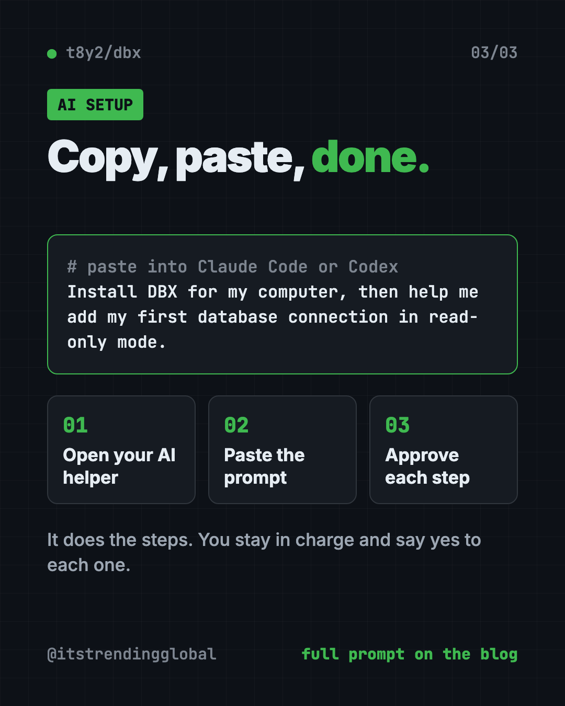

DBX: Free Database Client for 100+ Databases, With AI (2026)
- Free AI tools
- Published 2026-10-15
- 8 min read
- Updated 2026-10-16
- Stars 26.8K
- License Apache-2.0
- By the It's Trending Global team
DBX is a free database client that opens 100+ kinds of databases in a 25 MB app. Its AI helper turns plain English into database queries for you.
DBX is a free database client that lets you open, search and edit over 100 kinds of databases from one small app. It's about 25 MB, runs on Mac, Windows and Linux, and has a built-in AI helper that writes database questions for you in plain English.
Below: what it is, real ways to use it, the exact install steps, and a prompt so an AI helper can set it up for you.
Key takeaways
- Free and open source under the Apache-2.0 license.
- One app, 100+ databases, including MySQL, PostgreSQL, SQLite, MongoDB, Redis and SQL Server.
- Tiny. About 25 MB, with no Java or other extras to install.
- AI built in. Describe what you want, and it writes the SQL. It works with Claude, OpenAI or local models.
- Safety checks. It reviews AI-written SQL before it runs and asks before risky changes.
What is DBX?
Almost every app and website keeps its information in a database. Think of a database as a giant, very organized spreadsheet that a program reads and writes.
To look inside one, you need a database client. That's an app that connects to the database and shows you the tables, like opening a spreadsheet file.
DBX is that app. Its tagline is "100+ databases in 25 MB." The README points out that rival tools either need Java (DBeaver) or have paid tiers (TablePlus), while DBX "runs everywhere with nothing extra."
Normally, asking a database a question means writing SQL, a special language databases understand. DBX's AI helper can write it for you.
The project has about 26.8K stars on GitHub. Stars are like bookmarks, so many people find it useful.

What can DBX do?
Here are the parts most people will use, all from the README:
- A spreadsheet-style data grid. Scroll huge tables, edit cells inline, sort, filter and search.
- SQL preview before save. You see exactly what will change before it happens.
- Export anywhere. Copy or export results as CSV, JSON, Markdown or Excel (XLSX).
- Import data. Load CSV or Excel files into a table.
- Quick file preview. Drag and drop a CSV, JSON or Parquet file to peek inside instantly.
- Visual maps. An ER diagram shows how your tables connect.
- Move data. Transfer data between databases, or compare two tables.
- Bring your setup. Import saved connections from DBeaver or Navicat.
- Dark mode, 9 editor themes, and English, Chinese and Spanish.
It also has special viewers for Redis and MongoDB, and consoles for message tools like Kafka and RabbitMQ.
💡 Tip: Color-code your connections in DBX. A red "live" database and a green "test" one make it much harder to change the wrong thing by accident.
How does the DBX AI SQL assistant work?
You highlight a table, describe what you want in plain words, and get SQL back. The README says DBX can also explain a query, speed it up, or fix an error.
It works with Claude, OpenAI, local models through Ollama, or any service that speaks the OpenAI format. Before AI-written SQL runs, DBX puts it through built-in safety checks.
DBX also speaks MCP, a standard way for AI tools to plug into other apps. That means Claude Code, Cursor and Windsurf can query your databases through the connections you already set up in DBX. You choose read-only, read and write, or full access in DBX's settings.
How to use DBX (real examples)
- Check an order. Search the orders table for a customer's email and see their last purchase.
- Fix a typo. Edit a customer's misspelled name right in the grid, preview the change, then save.
- Pull a quick report. Ask "how many sign-ups did we get each week this month?" and let the AI write the SQL.
- Hand data to your boss. Export the result straight to an Excel file.
- Peek at a mystery file. Drag a big CSV onto DBX to see what's in it before you open it anywhere else.

Is DBX free?
Yes. DBX is free and open source under the Apache-2.0 license. The README says it's "free and open source" and offers voluntary donations for those who want to help.
The AI helper uses your own AI account or a local model. So if you connect a paid AI service, that service may charge you for what you use.
DBX at a glance
| Price | Free (AI services you connect may cost money) |
| Works offline | Yes, for local databases. The AI needs a local model or an internet AI service |
| Platforms | Mac, Windows, Linux, plus Docker and a web version |
| License | Apache-2.0 (open source) |
| Size | About 25 MB |
| Databases | 100+ |
| Latest version | 0.6.45 (October 15, 2026) |
| Best for | Anyone who needs to look inside or edit a database without a heavy tool |
How to install DBX on Mac, Windows and Linux
These are the official steps from the DBX README. The simplest way is to download the latest release from the project's GitHub Releases page and install it like any app.
Prefer a command? Open Terminal (Mac) or PowerShell (Windows).
On a Mac with Homebrew (a free app installer), copy and paste this:
brew install --cask dbx
On Windows with WinGet, copy and paste this:
winget install t8y2.dbx
On Windows with Scoop, copy and paste this:
scoop bucket add dbx https://github.com/t8y2/scoop-bucket
scoop install dbx
On Linux with Flatpak, copy and paste this:
flatpak remote-add --if-not-exists flatpark https://dl.flatpark.org/flatpark.flatpakrepo
flatpak install flatpark com.dbxio.dbx
Run it for a team with Docker
Docker is a tool that runs apps in a sealed box. If you want a shared web version, copy and paste this:
docker run -d --pull=always --name dbx -p 4224:4224 \
-v dbx-data:/app/data \
t8y2/dbx:latest
Then open http://localhost:4224 in your browser.
⚠️ Heads up: Always try edits on a test copy of your database first. DBX asks before destructive changes, but a wrong "save" on live data can still hurt.
Let Claude or Codex set it up for you
Claude Code and OpenAI Codex are AI helpers that can run setup steps on your computer. You paste a request, it does the steps, and you approve each one.
Copy and paste this:
Please help me install DBX, the free database client (github.com/t8y2/dbx).
1. Check if I'm on Mac, Windows or Linux.
2. Install DBX with the official command from the README for my system.
3. Explain each step in plain words before you run it.
4. When it's done, help me add my first database connection safely, in read-only mode if possible.
Then try asking:
Set up the DBX MCP server so you can read my databases in read-only mode.
Using DBX, show me the 10 newest rows in my orders table and explain what each column means.
Write a SQL query for DBX that counts sign-ups per week this month. Explain it before I run it.

Our take
DBX packs a lot into a very small app. For most people who just need to look inside a database, it's quicker to set up than the big names.
What we like:
- Free, open source and small.
- One tool for 100+ databases, so you don't juggle apps.
- The AI helper lowers the bar for people who don't know SQL.
- Safety features like SQL preview, confirm dialogs and read-only AI access.
- Connection passwords are stored encrypted, using your computer's keychain on desktop.
What to watch for:
- It's still below version 1.0, and updates come fast.
- The AI is only as careful as the access you give it. Start read-only.
- Many sponsors listed in the README are services aimed at users in China.
- It's a power tool. You still need to know what your data means.
Want a picture of your database layout? Our Archify guide shows how to turn a schema into an interactive diagram. Need to build real Excel files with AI? Read our OfficeCLI guide.
FAQ
Is DBX a free database client?
Yes. DBX is free and open source under the Apache-2.0 license. AI services you connect to it may charge for usage.
Which databases does DBX support?
Over 100, including MySQL, PostgreSQL, SQLite, MongoDB, Redis, SQL Server, Oracle, DuckDB and ClickHouse.
Can DBX write SQL for me?
Yes. Its AI SQL assistant turns plain-language requests into SQL. It can also explain, fix or speed up a query.
Does DBX work with Claude Code?
Yes. DBX has an MCP server that lets Claude Code, Cursor and Windsurf query your databases. You control the access level in DBX settings.
Is DBX safe for live databases?
It has safety checks, SQL previews and confirm dialogs for risky changes. Still, test on a copy first and give AI tools read-only access.
Get DBX: github.com/t8y2/dbx
Follow ITG Now on Instagram for one free, useful tool every day.
Keep reading

PureMac: Free CleanMyMac Alternative, No Subscription
PureMac is a free CleanMyMac alternative. It clears junk, fully uninstalls apps and finds duplicates, with no subscription, no tracking and no scare tactics.

Strata: Run Big Local AI on a Gaming PC, Free
Strata is a free installer that runs big, private local AI on a gaming PC. It sets up a large Qwen model, so your chats never leave your computer.

OpenSEO: Free Semrush Alternative, Open Source (2026)
OpenSEO is a free Semrush alternative for keyword research, rank tracking and site audits. It's open source, and you pay only for the search data you use.